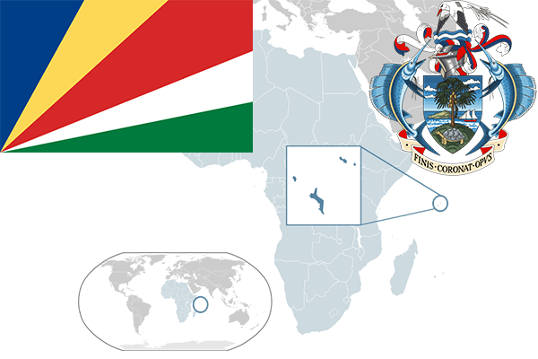

To`liq nomi: Seyshel Orollari Respublikasi
Region: Hind okeani
Qonunchilik shakli: Respublika
Mustaqillik kuni: 29 iyun 1976-yil
Poytaxt: Viktoriya
Maydoni: 455 km²
Chegaradosh davlatlari: Yo’q
Aholisi: 94,228 (2016-yil)
Aholi zichligi: 482.7/km2
Aholining o`rtacha yoshi: 73,34 yil
Rasmiy tili: Ingliz, Fransuz tili
Dini: Xristian
Pul birligi: Seyshel rupisi
Telefon prefiksi: +248
Internet domen: .sc
Xalqaro tashkilotlarga a`zoligi: BMT
Dengiz va okeanlarga chiqishi: Hind okeani
YIM: Butun: $1.5 mlrd.( 2017-yil) Jon boshiga: $16,332
Yirik shaharlari: Viktoriya